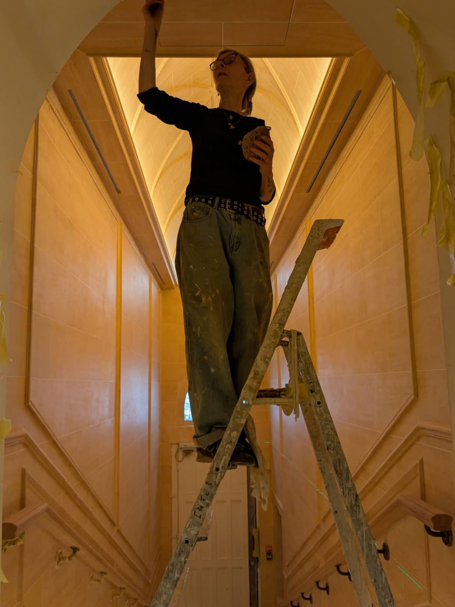

Emma Foreman
Spécialiste des enduits décoratifs et des patines, elle travaille depuis trente-cinq ans en indépendante pour des ateliers de peinture décorative, sur les chantiers de boutiques de grandes maisons de luxe, et directement chez des particuliers. Elle adapte la matière à chaque lieu.